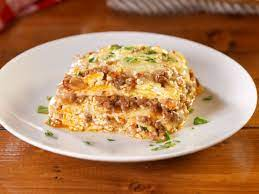

Keto Lasagna

KETO LASAGNA RECIPE
Going Keto can be hard when you start thinking about what you'll be missing. Luckily, a classic lasagna won't be one of them. This low-carb lasagna uses a simple noodle replacement that once it's covered in meat and cheese, feels just like pasta.
INGREDIENTS:
- 1 lb ground beef
- 1/2 onion, diced
- 3 cloves garlic, minced
- 1 jar (24 oz) sugar-free tomato sauce
- 1/2 cup water
- 1 tsp Italian seasoning
- 1 tsp salt
- 1/2 tsp black pepper
- 1/4 tsp red pepper flakes (optional)
- 1 egg
- 1 container (15 oz) ricotta cheese
- 1/4 cup grated Parmesan cheese
- 2 cups shredded mozzarella cheese
- 8-10 large zucchini, sliced lengthwise into thin strips
STEPS:
- Preheat oven to 375°F.
- In a large skillet over medium heat, brown the ground beef and onion together until the meat is no longer pink. Drain the excess fat.
- Add the minced garlic and cook for an additional minute.
- Stir in the tomato sauce, water, Italian seasoning, salt, black pepper, and red pepper flakes (if using). Bring to a simmer and cook for 5-10 minutes, until the sauce has thickened slightly.
- In a separate bowl, beat the egg and mix in the ricotta cheese and grated Parmesan cheese.
- Spread a thin layer of the meat sauce on the bottom of a 9x13 inch baking dish.
- Layer zucchini strips on top of the meat sauce, followed by a layer of the ricotta cheese mixture, and then a layer of shredded mozzarella cheese.
- Repeat the layers until all the ingredients are used up, ending with a layer of shredded mozzarella cheese on top.
- Cover the dish with aluminum foil and bake for 30 minutes.
- Remove the foil and bake for an additional 15-20 minutes, until the cheese is melted and bubbly.
- Allow the lasagna to cool for 10 minutes before serving.
Enjoy your delicious keto lasagna!